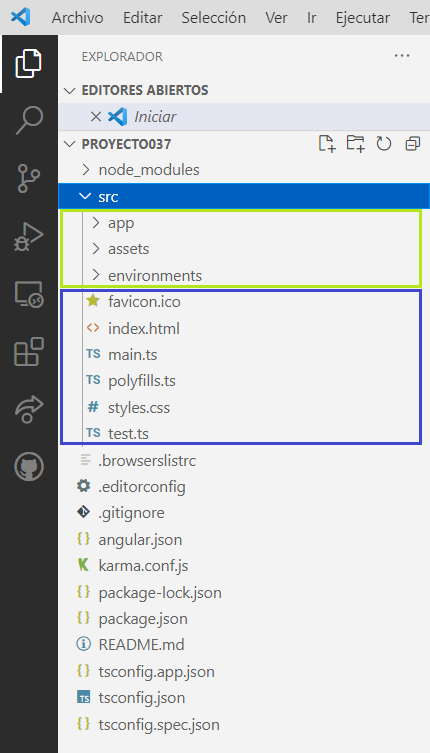

La carpeta 'src' (source) depende directamente de la carpeta raiz del proyecto y contiene en su interior 3 carpetas y 6 archivos:
index.html Es la página HTML principal que se sirve cuando alguien visita el sitio web. Angular CLI agrega automáticamente todos los archivos JavaScript y CSS al compilar la aplicación, por lo que generalmente no necesita agregar ningún <script>o <link>.
<!doctype html> <html lang="en"> <head> <meta charset="utf-8"> <title>Proyecto037</title> <base href="/"> <meta name="viewport" content="width=device-width, initial-scale=1"> <link rel="icon" type="image/x-icon" href="favicon.ico"> </head> <body> <app-root></app-root> </body> </html>
Si ejecutamos la aplicación y vemos el código que llega al navegador nos encontraremos un contenido similar a este (se agregan una serie de archivos *.js):
<!doctype html> <html lang="en"> <head> <meta charset="utf-8"> <title>Proyecto037</title> <base href="/"> <meta name="viewport" content="width=device-width, initial-scale=1"> <link rel="icon" type="image/x-icon" href="favicon.ico"> <link rel="stylesheet" href="styles.css"></head> <body> <app-root></app-root> <script src="runtime.js" type="module"></script><script src="polyfills.js" type="module"></script> <script src="styles.js" defer></script><script src="vendor.js" type="module"> </script><script src="main.js" type="module"></script> </body> </html
Podemos analizar que en el archivo original en el body se inserta una etiqueta de tipo 'app-root'. Esta etiqueta hace referencia a la única componente que se ha creado en forma automática y se encuentra almacenada en la carpeta hija llamada 'app' donde si abrimos el archivo 'app.component.ts' nos encontramos definido en la propiedad 'selector' el nombre de la etiqueta 'app-root':
import { Component } from '@angular/core';
@Component({
selector: 'app-root',
templateUrl: './app.component.html',
styleUrls: ['./app.component.css']
})
export class AppComponent {
title = 'proyecto037';
}
Si borraramos de la sección del body del archivo 'index.html' la etiqueta 'app-root' y lanzamos la aplicación, veremos que aparece una página web vacía.
favicon.ico Un icono que es asociado a la aplicación y se mostrará en la barra de marcadores de un navegador.
styles.css En este archivo definimos la hoja de estilo global del proyecto.
main.ts Este archivo es el punto de entrada principal para la aplicación Angular:
import { enableProdMode } from '@angular/core';
import { platformBrowserDynamic } from '@angular/platform-browser-dynamic';
import { AppModule } from './app/app.module';
import { environment } from './environments/environment';
if (environment.production) {
enableProdMode();
}
platformBrowserDynamic().bootstrapModule(AppModule)
.catch(err => console.error(err));
A partir del objeto que retorna la función 'platformBrowserDynamic' llamamos al método 'bootstrapModule' y le pasamos como parámetro la referencia del módulo principal de la aplicación llamada 'AppModule' que luego veremos que se encuentra declarado en la carpeta 'app'.
polyfills.ts Proporciona scripts de polyfill para soporte del navegador.
test.ts Es el punto de entrada principal para sus pruebas unitarias, con alguna configuración específica para Angular. Por lo general, no necesita editar este archivo.
// This file is required by karma.conf.js and loads recursively all the .spec and framework files
import 'zone.js/dist/zone-testing';
import { getTestBed } from '@angular/core/testing';
import {
BrowserDynamicTestingModule,
platformBrowserDynamicTesting
} from '@angular/platform-browser-dynamic/testing';
declare const require: {
context(path: string, deep?: boolean, filter?: RegExp): {
keys(): string[];
<T>(id: string): T;
};
};
// First, initialize the Angular testing environment.
getTestBed().initTestEnvironment(
BrowserDynamicTestingModule,
platformBrowserDynamicTesting()
);
// Then we find all the tests.
const context = require.context('./', true, /\.spec\.ts$/);
// And load the modules.
context.keys().map(context);